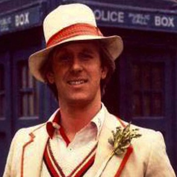

Portrayed by Peter Davison.
|  | Davison was born Peter Moffett in Streatham, London, son of an electrical engineer who was originally from Guyana. The family then moved to Knaphill in Surrey. Before becoming an actor, he gained three O-levels at Winston Churchill School, St John's, Woking, Surrey, and then had several odd jobs, including a stint as a mortuary attendant. Davison studied at the Central School of Speech and Drama. His first job was as an actor and assistant stage manager at the Nottingham Playhouse. He chose the stage name Peter Davison to avoid confusion with the actor and director Peter Moffatt, with whom Davison later worked. |